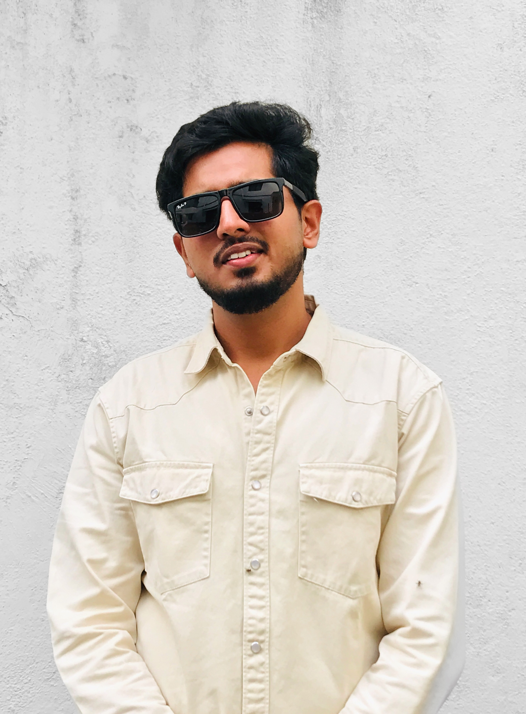

Mohammed Fazal Basha. BCA Graduate specializing in AI & Data Science. Bridging technical innovation with strategic communication.
From IoT safety systems like PAW CROSS to localized brand strategies at Idam Natural Wellness, I focus on high-impact digital solutions that solve real-world problems.

Dr. M.G.R Educational and Research Institute, Chennai
Everwin Matriculation Higher Secondary School, Kolathur, Chennai
Everwin Matriculation Higher Secondary School, Kolathur, Chennai